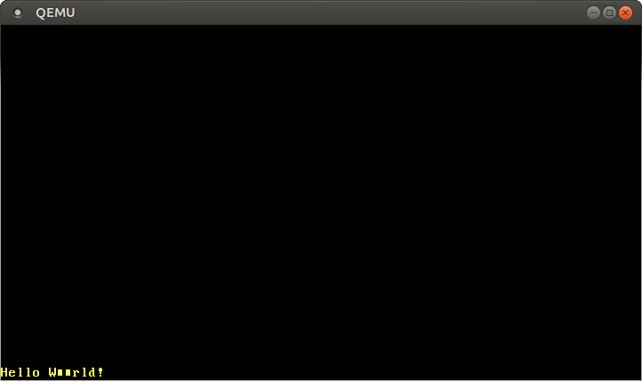

VGA 字符模式
翻译内容： 这是对原文章 VGA Text Mode 的社区中文翻译。它可能不完整，过时或者包含错误。可以在 这个 Issue 上评论和提问！
翻译者： @luojia65 和 @Rustin-Liu. With contributions from @liuyuran.
VGA 字符模式（VGA text mode）是打印字符到屏幕的一种简单方式。在这篇文章中，为了包装这个模式为一个安全而简单的接口，我们将包装 unsafe 代码到独立的模块。我们还将实现对 Rust 语言格式化宏（formatting macros）的支持。
此博客在 GitHub 上公开开发. 如果您有任何问题或疑问，请在此处打开一个 issue。 您也可以在底部发表评论. 这篇文章的完整源代码可以在 [post-03] post branch 分支中找到。
目录
🔗VGA 字符缓冲区
为了在 VGA 字符模式中向屏幕打印字符，我们必须将它写入硬件提供的 VGA 字符缓冲区（VGA text buffer）。通常状况下，VGA 字符缓冲区是一个 25 行、80 列的二维数组，它的内容将被实时渲染到屏幕。这个数组的元素被称作字符单元（character cell），它使用下面的格式描述一个屏幕上的字符：
| Bit(s) | Value |
|---|---|
| 0-7 | ASCII code point |
| 8-11 | Foreground color |
| 12-14 | Background color |
| 15 | Blink |
第一个字节表示了应当输出的 ASCII 编码，更加准确的说，类似于 437 字符编码表 中字符对应的编码，但又有细微的不同。 这里为了简化表达，我们在文章里将其简称为ASCII字符。
第二个字节则定义了字符的显示方式，前四个比特定义了前景色，中间三个比特定义了背景色，最后一个比特则定义了该字符是否应该闪烁，以下是可用的颜色列表：
| Number | Color | Number + Bright Bit | Bright Color |
|---|---|---|---|
| 0x0 | Black | 0x8 | Dark Gray |
| 0x1 | Blue | 0x9 | Light Blue |
| 0x2 | Green | 0xa | Light Green |
| 0x3 | Cyan | 0xb | Light Cyan |
| 0x4 | Red | 0xc | Light Red |
| 0x5 | Magenta | 0xd | Pink |
| 0x6 | Brown | 0xe | Yellow |
| 0x7 | Light Gray | 0xf | White |
每个颜色的第四位称为加亮位（bright bit），比如blue加亮后就变成了light blue，但对于背景色，这个比特会被用于标记是否闪烁。
要修改 VGA 字符缓冲区，我们可以通过存储器映射输入输出（memory-mapped I/O）的方式，读取或写入地址 0xb8000；这意味着，我们可以像操作普通的内存区域一样操作这个地址。
需要注意的是，一些硬件虽然映射到存储器，但可能不会完全支持所有的内存操作：可能会有一些设备支持按 u8 字节读取，但在读取 u64 时返回无效的数据。幸运的是，字符缓冲区都支持标准的读写操作，所以我们不需要用特殊的标准对待它。
🔗包装到 Rust 模块
既然我们已经知道 VGA 文字缓冲区如何工作，也是时候创建一个 Rust 模块来处理文字打印了。我们输入这样的代码：
// in src/main.rs
mod vga_buffer;
我们的模块暂时不需要添加子模块，所以我们将它创建为 src/vga_buffer.rs 文件。除非另有说明，本文中的代码都保存到这个文件中。
🔗颜色
首先，我们使用 Rust 的枚举（enum）表示特定的颜色：
// in src/vga_buffer.rs
#[allow(dead_code)]
#[derive(Debug, Clone, Copy, PartialEq, Eq)]
#[repr(u8)]
pub enum Color {
Black = 0,
Blue = 1,
Green = 2,
Cyan = 3,
Red = 4,
Magenta = 5,
Brown = 6,
LightGray = 7,
DarkGray = 8,
LightBlue = 9,
LightGreen = 10,
LightCyan = 11,
LightRed = 12,
Pink = 13,
Yellow = 14,
White = 15,
}
我们使用类似于 C 语言的枚举（C-like enum），为每个颜色明确指定一个数字。在这里，每个用 repr(u8) 注记标注的枚举类型，都会以一个 u8 的形式存储——事实上 4 个二进制位就足够了，但 Rust 语言并不提供 u4 类型。
通常来说，编译器会对每个未使用的变量发出警告（warning）；使用 #[allow(dead_code)]，我们可以对 Color 枚举类型禁用这个警告。
我们还生成（derive）了 Copy、Clone、Debug、PartialEq 和 Eq 这几个 trait：这让我们的类型遵循复制语义（copy semantics），也让它可以被比较、被调试和打印。
为了描述包含前景色和背景色的、完整的颜色代码（color code），我们基于 u8 创建一个新类型：
// in src/vga_buffer.rs
#[derive(Debug, Clone, Copy, PartialEq, Eq)]
#[repr(transparent)]
struct ColorCode(u8);
impl ColorCode {
fn new(foreground: Color, background: Color) -> ColorCode {
ColorCode((background as u8) << 4 | (foreground as u8))
}
}
这里，ColorCode 类型包装了一个完整的颜色代码字节，它包含前景色和背景色信息。和 Color 类型类似，我们为它生成 Copy 和 Debug 等一系列 trait。为了确保 ColorCode 和 u8 有完全相同的内存布局，我们添加 repr(transparent) 标记。
🔗字符缓冲区
现在，我们可以添加更多的结构体，来描述屏幕上的字符和整个字符缓冲区：
// in src/vga_buffer.rs
#[derive(Debug, Clone, Copy, PartialEq, Eq)]
#[repr(C)]
struct ScreenChar {
ascii_character: u8,
color_code: ColorCode,
}
const BUFFER_HEIGHT: usize = 25;
const BUFFER_WIDTH: usize = 80;
#[repr(transparent)]
struct Buffer {
chars: [[ScreenChar; BUFFER_WIDTH]; BUFFER_HEIGHT],
}
在内存布局层面，Rust 并不保证按顺序布局成员变量。因此，我们需要使用 #[repr(C)] 标记结构体；这将按 C 语言约定的顺序布局它的成员变量，让我们能正确地映射内存片段。对 Buffer 类型，我们再次使用 repr(transparent)，来确保类型和它的单个成员有相同的内存布局。
为了输出字符到屏幕，我们来创建一个 Writer 类型：
// in src/vga_buffer.rs
pub struct Writer {
column_position: usize,
color_code: ColorCode,
buffer: &'static mut Buffer,
}
我们将让这个 Writer 类型将字符写入屏幕的最后一行，并在一行写满或接收到换行符 \n 的时候，将所有的字符向上位移一行。column_position 变量将跟踪光标在最后一行的位置。当前字符的前景和背景色将由 color_code 变量指定；另外，我们存入一个 VGA 字符缓冲区的可变借用到buffer变量中。需要注意的是，这里我们对借用使用显式生命周期（explicit lifetime），告诉编译器这个借用在何时有效：我们使用** 'static 生命周期 **（’static lifetime），意味着这个借用应该在整个程序的运行期间有效；这对一个全局有效的 VGA 字符缓冲区来说，是非常合理的。
🔗打印字符
现在我们可以使用 Writer 类型来更改缓冲区内的字符了。首先，为了写入一个 ASCII 码字节，我们创建这样的函数：
// in src/vga_buffer.rs
impl Writer {
pub fn write_byte(&mut self, byte: u8) {
match byte {
b'\n' => self.new_line(),
byte => {
if self.column_position >= BUFFER_WIDTH {
self.new_line();
}
let row = BUFFER_HEIGHT - 1;
let col = self.column_position;
let color_code = self.color_code;
self.buffer.chars[row][col] = ScreenChar {
ascii_character: byte,
color_code,
};
self.column_position += 1;
}
}
}
fn new_line(&mut self) {/* TODO */}
}
如果这个字节是一个换行符（line feed）字节 \n，我们的 Writer 不应该打印新字符，相反，它将调用我们稍后会实现的 new_line 方法；其它的字节应该将在 match 语句的第二个分支中被打印到屏幕上。
当打印字节时，Writer 将检查当前行是否已满。如果已满，它将首先调用 new_line 方法来将这一行字向上提升，再将一个新的 ScreenChar 写入到缓冲区，最终将当前的光标位置前进一位。
要打印整个字符串，我们把它转换为字节并依次输出：
// in src/vga_buffer.rs
impl Writer {
pub fn write_string(&mut self, s: &str) {
for byte in s.bytes() {
match byte {
// 可以是能打印的 ASCII 码字节，也可以是换行符
0x20..=0x7e | b'\n' => self.write_byte(byte),
// 不包含在上述范围之内的字节
_ => self.write_byte(0xfe),
}
}
}
}
VGA 字符缓冲区只支持 ASCII 码字节和代码页 437（Code page 437）定义的字节。Rust 语言的字符串默认编码为 UTF-8，也因此可能包含一些 VGA 字符缓冲区不支持的字节：我们使用 match 语句，来区别可打印的 ASCII 码或换行字节，和其它不可打印的字节。对每个不可打印的字节，我们打印一个 ■ 符号；这个符号在 VGA 硬件中被编码为十六进制的 0xfe。
我们可以亲自试一试已经编写的代码。为了这样做，我们可以临时编写一个函数：
// in src/vga_buffer.rs
pub fn print_something() {
let mut writer = Writer {
column_position: 0,
color_code: ColorCode::new(Color::Yellow, Color::Black),
buffer: unsafe { &mut *(0xb8000 as *mut Buffer) },
};
writer.write_byte(b'H');
writer.write_string("ello ");
writer.write_string("Wörld!");
}
这个函数首先创建一个指向 0xb8000 地址VGA缓冲区的 Writer。实现这一点，我们需要编写的代码可能看起来有点奇怪：首先，我们把整数 0xb8000 强制转换为一个可变的裸指针（raw pointer）；之后，通过运算符*，我们将这个裸指针解引用；最后，我们再通过 &mut，再次获得它的可变借用。这些转换需要 unsafe 语句块（unsafe block），因为编译器并不能保证这个裸指针是有效的。
然后它将字节 b'H' 写入缓冲区内. 前缀 b 创建了一个字节常量（byte literal），表示单个 ASCII 码字符；通过尝试写入 "ello " 和 "Wörld!"，我们可以测试 write_string 方法和其后对无法打印字符的处理逻辑。为了观察输出，我们需要在 _start 函数中调用 print_something 方法：
// in src/main.rs
#[no_mangle]
pub extern "C" fn _start() -> ! {
vga_buffer::print_something();
loop {}
}
编译运行后，黄色的 Hello W■■rld! 字符串将会被打印在屏幕的左下角：

需要注意的是，ö 字符被打印为两个 ■ 字符。这是因为在 UTF-8 编码下，字符 ö 是由两个字节表述的——而这两个字节并不处在可打印的 ASCII 码字节范围之内。事实上，这是 UTF-8 编码的基本特点之一：如果一个字符占用多个字节，那么每个组成它的独立字节都不是有效的 ASCII 码字节（the individual bytes of multi-byte values are never valid ASCII）。
🔗易失操作
我们刚才看到，自己想要输出的信息被正确地打印到屏幕上。然而，未来 Rust 编译器更暴力的优化可能让这段代码不按预期工作。
产生问题的原因在于，我们只向 Buffer 写入，却不再从它读出数据。此时，编译器不知道我们事实上已经在操作 VGA 缓冲区内存，而不是在操作普通的 RAM——因此也不知道产生的副效应（side effect），即会有几个字符显示在屏幕上。这时，编译器也许会认为这些写入操作都没有必要，甚至会选择忽略这些操作！所以，为了避免这些并不正确的优化，这些写入操作应当被指定为易失操作。这将告诉编译器，这些写入可能会产生副效应，不应该被优化掉。
为了在我们的 VGA 缓冲区中使用易失的写入操作，我们使用 volatile 库。这个包（crate）提供一个名为 Volatile 的包装类型（wrapping type）和它的 read、write 方法；这些方法包装了 core::ptr 内的 read_volatile 和 write_volatile 函数，从而保证读操作或写操作不会被编译器优化。
要添加 volatile 包为项目的依赖项（dependency），我们可以在 Cargo.toml 文件的 dependencies 中添加下面的代码：
# in Cargo.toml
[dependencies]
volatile = "0.2.6"
0.2.6 表示一个语义版本号（semantic version number），在 cargo 文档的《指定依赖项》章节可以找到与它相关的使用指南。
现在，我们使用它来完成 VGA 缓冲区的 volatile 写入操作。我们将 Buffer 类型的定义修改为下列代码：
// in src/vga_buffer.rs
use volatile::Volatile;
struct Buffer {
chars: [[Volatile<ScreenChar>; BUFFER_WIDTH]; BUFFER_HEIGHT],
}
在这里，我们不使用 ScreenChar ，而选择使用 Volatile<ScreenChar> ——在这里，Volatile 类型是一个泛型（generic），可以包装几乎所有的类型——这确保了我们不会通过普通的写入操作，意外地向它写入数据；我们转而使用提供的 write 方法。
这意味着，我们必须要修改我们的 Writer::write_byte 方法：
// in src/vga_buffer.rs
impl Writer {
pub fn write_byte(&mut self, byte: u8) {
match byte {
b'\n' => self.new_line(),
byte => {
...
self.buffer.chars[row][col].write(ScreenChar {
ascii_character: byte,
color_code: color_code,
});
...
}
}
}
...
}
正如代码所示，我们不再使用普通的 = 赋值，而使用了 write 方法：这能确保编译器不再优化这个写入操作。
🔗格式化宏
支持 Rust 提供的格式化宏（formatting macros）也是一个很好的思路。通过这种途径，我们可以轻松地打印不同类型的变量，如整数或浮点数。为了支持它们，我们需要实现 core::fmt::Write trait；要实现它，唯一需要提供的方法是 write_str，它和我们先前编写的 write_string 方法差别不大，只是返回值类型变成了 fmt::Result：
// in src/vga_buffer.rs
use core::fmt;
impl fmt::Write for Writer {
fn write_str(&mut self, s: &str) -> fmt::Result {
self.write_string(s);
Ok(())
}
}
这里，Ok(()) 属于 Result 枚举类型中的 Ok，包含一个值为 () 的变量。
现在我们就可以使用 Rust 内置的格式化宏 write! 和 writeln! 了：
// in src/vga_buffer.rs
pub fn print_something() {
use core::fmt::Write;
let mut writer = Writer {
column_position: 0,
color_code: ColorCode::new(Color::Yellow, Color::Black),
buffer: unsafe { &mut *(0xb8000 as *mut Buffer) },
};
writer.write_byte(b'H');
writer.write_string("ello! ");
write!(writer, "The numbers are {} and {}", 42, 1.0/3.0).unwrap();
}
现在，你应该在屏幕下端看到一串 Hello! The numbers are 42 and 0.3333333333333333。write! 宏返回的 Result 类型必须被使用，所以我们调用它的 unwrap 方法，它将在错误发生时 panic。这里的情况下应该不会发生这样的问题，因为写入 VGA 字符缓冲区并没有可能失败。
🔗换行
在之前的代码中，我们忽略了换行符，因此没有处理超出一行字符的情况。当换行时，我们想要把每个字符向上移动一行——此时最顶上的一行将被删除——然后在最后一行的起始位置继续打印。要做到这一点，我们要为 Writer 实现一个新的 new_line 方法：
// in src/vga_buffer.rs
impl Writer {
fn new_line(&mut self) {
for row in 1..BUFFER_HEIGHT {
for col in 0..BUFFER_WIDTH {
let character = self.buffer.chars[row][col].read();
self.buffer.chars[row - 1][col].write(character);
}
}
self.clear_row(BUFFER_HEIGHT - 1);
self.column_position = 0;
}
fn clear_row(&mut self, row: usize) {/* TODO */}
}
我们遍历每个屏幕上的字符，把每个字符移动到它上方一行的相应位置。这里，.. 符号是区间标号（range notation）的一种；它表示左闭右开的区间，因此不包含它的上界。在外层的枚举中，我们从第 1 行开始，省略了对第 0 行的枚举过程——因为这一行应该被移出屏幕，即它将被下一行的字符覆写。
所以我们实现的 clear_row 方法代码如下：
// in src/vga_buffer.rs
impl Writer {
fn clear_row(&mut self, row: usize) {
let blank = ScreenChar {
ascii_character: b' ',
color_code: self.color_code,
};
for col in 0..BUFFER_WIDTH {
self.buffer.chars[row][col].write(blank);
}
}
}
通过向对应的缓冲区写入空格字符，这个方法能清空一整行的字符位置。
🔗全局接口
编写其它模块时，我们希望无需随时拥有 Writer 实例，便能使用它的方法。我们尝试创建一个静态的 WRITER 变量：
// in src/vga_buffer.rs
pub static WRITER: Writer = Writer {
column_position: 0,
color_code: ColorCode::new(Color::Yellow, Color::Black),
buffer: unsafe { &mut *(0xb8000 as *mut Buffer) },
};
我们尝试编译这些代码，却发生了下面的编译错误：
error[E0015]: calls in statics are limited to constant functions, tuple structs and tuple variants
--> src/vga_buffer.rs:7:17
|
7 | color_code: ColorCode::new(Color::Yellow, Color::Black),
| ^^^^^^^^^^^^^^^^^^^^^^^^^^^^^^^^^^^^^^^^^^^
error[E0396]: raw pointers cannot be dereferenced in statics
--> src/vga_buffer.rs:8:22
|
8 | buffer: unsafe { &mut *(0xb8000 as *mut Buffer) },
| ^^^^^^^^^^^^^^^^^^^^^^^^^^^^^^ dereference of raw pointer in constant
error[E0017]: references in statics may only refer to immutable values
--> src/vga_buffer.rs:8:22
|
8 | buffer: unsafe { &mut *(0xb8000 as *mut Buffer) },
| ^^^^^^^^^^^^^^^^^^^^^^^^^^^^^^ statics require immutable values
error[E0017]: references in statics may only refer to immutable values
--> src/vga_buffer.rs:8:13
|
8 | buffer: unsafe { &mut *(0xb8000 as *mut Buffer) },
| ^^^^^^^^^^^^^^^^^^^^^^^^^^^^^^^^^^^^^^^^^ statics require immutable values
为了明白现在发生了什么，我们需要知道一点：一般的变量在运行时初始化，而静态变量在编译时初始化。Rust编译器规定了一个称为常量求值器（const evaluator）的组件，它应该在编译时处理这样的初始化工作。虽然它目前的功能较为有限，但对它的扩展工作进展活跃，比如允许在常量中 panic 的一篇 RFC 文档。
关于 ColorCode::new 的问题应该能使用常函数（const functions）解决，但常量求值器还存在不完善之处，它还不能在编译时直接转换裸指针到变量的引用——也许未来这段代码能够工作，但在那之前，我们需要寻找另外的解决方案。
🔗延迟初始化
使用非常函数初始化静态变量是 Rust 程序员普遍遇到的问题。幸运的是，有一个叫做 lazy_static 的包提供了一个很棒的解决方案：它提供了名为 lazy_static! 的宏，定义了一个延迟初始化（lazily initialized）的静态变量；这个变量的值将在第一次使用时计算，而非在编译时计算。这时，变量的初始化过程将在运行时执行，任意的初始化代码——无论简单或复杂——都是能够使用的。
现在，我们将 lazy_static 包导入到我们的项目：
# in Cargo.toml
[dependencies.lazy_static]
version = "1.0"
features = ["spin_no_std"]
在这里，由于程序不连接标准库，我们需要启用 spin_no_std 特性。
使用 lazy_static 我们就可以定义一个不出问题的 WRITER 变量：
// in src/vga_buffer.rs
use lazy_static::lazy_static;
lazy_static! {
pub static ref WRITER: Writer = Writer {
column_position: 0,
color_code: ColorCode::new(Color::Yellow, Color::Black),
buffer: unsafe { &mut *(0xb8000 as *mut Buffer) },
};
}
然而，这个 WRITER 可能没有什么用途，因为它目前还是不可变变量（immutable variable）：这意味着我们无法向它写入数据，因为所有与写入数据相关的方法都需要实例的可变引用 &mut self。一种解决方案是使用可变静态（mutable static）的变量，但所有对它的读写操作都被规定为不安全的（unsafe）操作，因为这很容易导致数据竞争或发生其它不好的事情——使用 static mut 极其不被赞成，甚至有一些提案认为应该将它删除。也有其它的替代方案，比如可以尝试使用比如 RefCell 或甚至 UnsafeCell 等类型提供的内部可变性（interior mutability）；但这些类型都被设计为非同步类型，即不满足 Sync 约束，所以我们不能在静态变量中使用它们。
🔗spinlock
要定义同步的内部可变性，我们往往使用标准库提供的互斥锁类 Mutex，它通过提供当资源被占用时将线程阻塞（block）的互斥条件（mutual exclusion）实现这一点；但我们初步的内核代码还没有线程和阻塞的概念，我们将不能使用这个类。不过，我们还有一种较为基础的互斥锁实现方式——自旋锁（spinlock）。自旋锁并不会调用阻塞逻辑，而是在一个小的无限循环中反复尝试获得这个锁，也因此会一直占用 CPU 时间，直到互斥锁被它的占用者释放。
为了使用自旋互斥锁，我们添加 spin包 到项目的依赖项列表：
# in Cargo.toml
[dependencies]
spin = "0.5.2"
现在，我们能够使用自旋的互斥锁，为我们的 WRITER 类实现安全的内部可变性：
// in src/vga_buffer.rs
use spin::Mutex;
...
lazy_static! {
pub static ref WRITER: Mutex<Writer> = Mutex::new(Writer {
column_position: 0,
color_code: ColorCode::new(Color::Yellow, Color::Black),
buffer: unsafe { &mut *(0xb8000 as *mut Buffer) },
});
}
现在我们可以删除 print_something 函数，尝试直接在 _start 函数中打印字符：
// in src/main.rs
#[no_mangle]
pub extern "C" fn _start() -> ! {
use core::fmt::Write;
vga_buffer::WRITER.lock().write_str("Hello again").unwrap();
write!(vga_buffer::WRITER.lock(), ", some numbers: {} {}", 42, 1.337).unwrap();
loop {}
}
在这里，我们需要导入名为 fmt::Write 的 trait，来使用实现它的类的相应方法。
🔗安全性
经过上面的努力后，我们现在的代码只剩一个 unsafe 语句块，它用于创建一个指向 0xb8000 地址的 Buffer 类型引用；在这步之后，所有的操作都是安全的。Rust 将为每个数组访问检查边界，所以我们不会在不经意间越界到缓冲区之外。因此，我们把需要的条件编码到 Rust 的类型系统，这之后，我们为外界提供的接口就符合内存安全原则了。
🔗println! 宏
现在我们有了一个全局的 Writer 实例，我们就可以基于它实现 println! 宏，这样它就能被任意地方的代码使用了。Rust 提供的宏定义语法需要时间理解，所以我们将不从零开始编写这个宏。我们先看看标准库中 println! 宏的实现源码：
#[macro_export]
macro_rules! println {
() => (print!("\n"));
($($arg:tt)*) => (print!("{}\n", format_args!($($arg)*)));
}
宏是通过一个或多个规则（rule）定义的，这就像 match 语句的多个分支。println! 宏有两个规则：第一个规则不要求传入参数——就比如 println!() ——它将被扩展为 print!("\n")，因此只会打印一个新行；第二个要求传入参数——好比 println!("Rust 能够编写操作系统") 或 println!("我学习 Rust 已经{}年了", 3)——它将使用 print! 宏扩展，传入它需求的所有参数，并在输出的字符串最后加入一个换行符 \n。
这里，#[macro_export] 属性让整个包（crate）和基于它的包都能访问这个宏，而不仅限于定义它的模块（module）。它还将把宏置于包的根模块（crate root）下，这意味着比如我们需要通过 use std::println 来导入这个宏，而不是通过 std::macros::println。
print! 宏是这样定义的：
#[macro_export]
macro_rules! print {
($($arg:tt)*) => ($crate::io::_print(format_args!($($arg)*)));
}
这个宏将扩展为一个对 io 模块中 _print 函数的调用。$crate 变量将在 std 包之外被解析为 std 包，保证整个宏在 std 包之外也可以使用。
format_args! 宏将传入的参数搭建为一个 fmt::Arguments 类型，这个类型将被传入 _print 函数。std 包中的 _print 函数将调用复杂的私有函数 print_to，来处理对不同 Stdout 设备的支持。我们不需要编写这样的复杂函数，因为我们只需要打印到 VGA 字符缓冲区。
要打印到字符缓冲区，我们把 println! 和 print! 两个宏复制过来，但修改部分代码，让这些宏使用我们定义的 _print 函数：
// in src/vga_buffer.rs
#[macro_export]
macro_rules! print {
($($arg:tt)*) => ($crate::vga_buffer::_print(format_args!($($arg)*)));
}
#[macro_export]
macro_rules! println {
() => ($crate::print!("\n"));
($($arg:tt)*) => ($crate::print!("{}\n", format_args!($($arg)*)));
}
#[doc(hidden)]
pub fn _print(args: fmt::Arguments) {
use core::fmt::Write;
WRITER.lock().write_fmt(args).unwrap();
}
我们首先修改了 println! 宏，在每个使用的 print! 宏前面添加了 $crate 变量。这样我们在只需要使用 println! 时，不必也编写代码导入 print! 宏。
就像标准库做的那样，我们为两个宏都添加了 #[macro_export] 属性，这样在包的其它地方也可以使用它们。需要注意的是，这将占用包的根命名空间（root namespace），所以我们不能通过 use crate::vga_buffer::println 来导入它们；我们应该使用 use crate::println。
另外，_print 函数将占有静态变量 WRITER 的锁，并调用它的 write_fmt 方法。这个方法是从名为 Write 的 trait 中获得的，所以我们需要导入这个 trait。额外的 unwrap() 函数将在打印不成功的时候 panic；但既然我们的 write_str 总是返回 Ok，这种情况不应该发生。
如果这个宏将能在模块外访问，它们也应当能访问 _print 函数，因此这个函数必须是公有的（public）。然而，考虑到这是一个私有的实现细节，我们添加一个 doc(hidden) 属性，防止它在生成的文档中出现。
🔗使用 println! 的 Hello World
现在，我们可以在 _start 里使用 println! 了：
// in src/main.rs
#[no_mangle]
pub extern "C" fn _start() {
println!("Hello World{}", "!");
loop {}
}
要注意的是，我们在入口函数中不需要导入这个宏——因为它已经被置于包的根命名空间了。
运行这段代码，和我们预料的一样，一个 “Hello World!” 字符串被打印到了屏幕上：

🔗打印 panic 信息
既然我们已经有了 println! 宏，我们可以在 panic 处理函数中，使用它打印 panic 信息和 panic 产生的位置：
// in main.rs
/// 这个函数将在 panic 发生时被调用
#[panic_handler]
fn panic(info: &PanicInfo) -> ! {
println!("{}", info);
loop {}
}
当我们在 _start 函数中插入一行 panic!("Some panic message"); 后，我们得到了这样的输出：

所以，现在我们不仅能知道 panic 已经发生，还能够知道 panic 信息和产生 panic 的代码。
🔗小结
这篇文章中，我们学习了 VGA 字符缓冲区的结构，以及如何在 0xb8000 的内存映射地址访问它。我们将所有的不安全操作包装为一个 Rust 模块，以便在外界安全地访问它。
我们也发现了——感谢便于使用的 cargo——在 Rust 中使用第三方提供的包是及其容易的。我们添加的两个依赖项，lazy_static 和 spin，都在操作系统开发中及其有用；我们将在未来的文章中多次使用它们。
🔗下篇预告
下一篇文章中，我们将会讲述如何配置 Rust 内置的单元测试框架。我们还将为本文编写的 VGA 缓冲区模块添加基础的单元测试项目。
评论
Do you have a problem, want to share feedback, or discuss further ideas? Feel free to leave a comment here! Please stick to English and follow Rust's code of conduct. This comment thread directly maps to a discussion on GitHub, so you can also comment there if you prefer.
Instead of authenticating the giscus application, you can also comment directly on GitHub.
请尽可能使用英语评论。